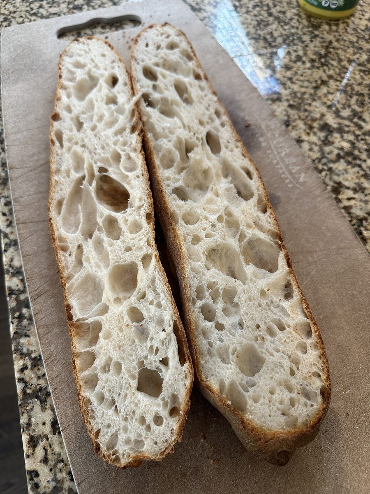

アクセス
場所と連絡先
確認できているのは、所在地とInstagramです。

写真はエスプレッソのイメージです。お店のものではありません。
ご案内
所在地
| 所在地 | 〒834-1221 福岡県八女市黒木町今２４２ |
|---|---|
| 電話 | 準備中 |
| 営業時間 | 準備中 |
| 定休日 | 準備中 |
| ご予約 | 準備中 |
| 駐車場 | 準備中 |
| SNS | Instagram @yamecha_story |
地図は所在地をもとに表示しています。最新情報はInstagramをご確認ください。
ギャラリー(イメージ)
コーヒー豆とパンの写真



写真はコーヒー豆とパンのイメージです。お店のものではありません。